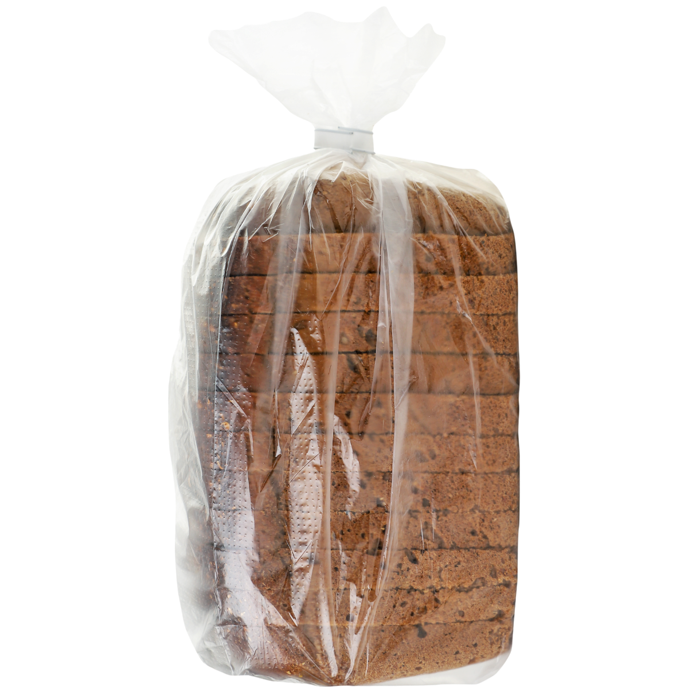

Whole-Wheat Bread
DailyLoaf Model B650
MeadowCrust DailyLoaf B650 is a 650 gram whole-wheat bread loaf containing 14 slices with a four-day freshness period.
- 650 gram whole-wheat loaf
- 14 pre-cut bread slices
- Four-day freshness period
14 Slices

DailyLoaf Whole-Wheat BreadModel B650
Made for everyday meals
Pre-sliced whole-wheat bread in a resealable package
MeadowCrust DailyLoaf B650 is a 650 gram whole-wheat bread loaf containing 14 pre-cut slices.
Whole-wheat flour is the main flour used in the loaf, which is intended for toast, sandwiches and other everyday meals.
After opening, reseal the original packaging, keep the loaf in a cool and dry place and consume the bread within four days.
Product highlights
DailyLoaf B650 Features
DailyLoaf B650 combines whole-wheat flour, a 650 gram loaf size, 14 pre-cut slices and a four-day freshness period.
Whole-Wheat Flour
Whole-wheat flour is the principal flour used to produce DailyLoaf B650.
650 Gram Loaf
Each package contains one whole-wheat loaf with a net weight of 650 grams.
14 Slices
The loaf contains 14 pre-cut slices for straightforward portioning and serving.
Four-Day Freshness
The bread has a four-day freshness period when the opened package is resealed and stored correctly.
Everyday Serving
The sliced loaf can be used for toast, sandwiches and other everyday meals.

Storage after opening
Reseal the package after each use
Remove the required slices, press excess air from the package, close the package securely and return the loaf to a cool and dry storage location.
- Keep the package closed
Reseal the original packaging immediately after removing the required slices.
- Use a cool, dry location
Keep the loaf away from direct sunlight, heat, moisture and strong odours.
- Use within four days
Consume the bread within four days after the package is opened.
Recommended storage
Reseal and use within four days
After opening, reseal the original packaging, store DailyLoaf B650 in a cool and dry place away from direct sunlight and consume the loaf within four days.
Freshness period4 daysAfter opening
Product details
Product Specifications
This table presents the main product and storage information for MeadowCrust DailyLoaf B650.
| Brand | MeadowCrust |
|---|---|
| Product name | DailyLoaf |
| Model | B650 |
| Product category | Whole-wheat bread |
| Net weight | 650 g |
| Slice count | 14 slices |
| Main flour | Whole-wheat flour |
| Freshness period | 4 days |
| Opened storage | Resealed original packaging |
| Storage location | Cool, dry place |
Storage guidance
Storing DailyLoaf B650 After Opening
Follow these steps after opening the whole-wheat bread package.
- 1
Remove the Slices
Remove only the number of bread slices required for the current meal.
- 2
Close the Package
Press excess air from the original package and close the opening securely.
- 3
Store the Loaf
Keep the resealed package in a cool and dry place away from direct sunlight.
- 4
Check the Period
Consume the remaining bread within four days after opening.
Important information
Bread Storage and Product Care
Follow these precautions when opening, serving and storing DailyLoaf B650.
Check the Package
Do not use the loaf if the packaging is open, torn or otherwise damaged before first use.
Reseal the Bread
Close the original package securely after removing slices to help limit exposure to air and moisture.
Check Before Serving
Do not consume the bread if visible mould, an unusual odour or another sign of spoilage is present.
Questions and Answers
Frequently Asked Questions
Find answers about DailyLoaf B650, including its weight, slice count, flour, freshness period and storage after opening.
Q What is DailyLoaf B650?
A
DailyLoaf B650 is a whole-wheat bread loaf produced by MeadowCrust.
Q What is the net weight of DailyLoaf B650?
A
DailyLoaf B650 has a net weight of 650 grams.
Q How many slices are included?
A
DailyLoaf B650 contains 14 pre-cut bread slices.
Q Which flour is used in DailyLoaf B650?
A
Whole-wheat flour is the main flour used in DailyLoaf B650.
Q How long is the freshness period?
A
DailyLoaf B650 has a four-day freshness period after opening when it is stored correctly.
Q How should DailyLoaf B650 be stored after opening?
A
Reseal the original packaging, keep the loaf in a cool and dry place and consume it within four days.